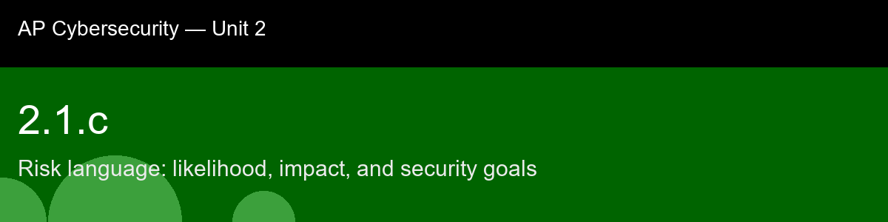

2.1.c recap, Risk language: likelihood, impact, and security goals
Nice work today. Here's what to lock in:
- Recap handout:
post-lecture-handout.docx
- Simulation: SimLab
- Self-check quiz: due before next class
The big picture: The four-treatment vocabulary, mitigate, accept, transfer, avoid, is worth memorizing cold, because it's the AP exam's cleanest test of whether you can reason about a scenario rather than just recite a definition. The trap most students fall into is assuming "mitigate" is always the right answer, since it sounds the most responsible. It isn't. Spending $20,000 to protect a $10,000 asset is a worse decision than accepting the risk outright, and buying insurance (transfer) is often smarter than trying to engineer your way to zero risk. The organizations that manage risk well aren't the ones that eliminate it, they're the ones that spend their limited defense budget on the risks where a dollar of mitigation actually buys a dollar (or more) of reduced expected loss.
Key terms to lock in:
- Risk, the probability that a threat will exploit a vulnerability and cause harm.
- Likelihood, the probability of a threat occurring (scored 1-5).
- Impact, the severity of the consequences if a threat occurs (scored 1-5).
- Mitigate, reducing risk by implementing security controls.
- Accept, retaining risk without active mitigation when it is low-impact or too expensive to fix.
- Transfer, sharing risk with third parties (like insurance or cloud hosting).
- Avoid, eliminating risk by stopping the risky activity altogether.
Common misconceptions -- don't fall for these:
- "We must eliminate all risk." → Impossible. Security has a cost, and organizations must accept some level of risk (known as risk appetite) to function.
- "Cyber insurance replaces technical security." → Insurance covers financial damage but does not prevent reputational loss, operational downtime, or legal liability.
- "Risk is the same as threat." → A threat is the actor or event (e.g., malware); risk includes how likely it is to happen to us and how bad it will be.
Learning objective(s): 2.1.C

## 2.1.c recap, Risk language: likelihood, impact, and security goals
Nice work today. Here's what to lock in:
- Recap handout: `post-lecture-handout.docx`
- Simulation: SimLab
- Self-check quiz: due before next class
**The big picture:** The four-treatment vocabulary, mitigate, accept, transfer, avoid, is worth memorizing cold, because it's the AP exam's cleanest test of whether you can reason about a scenario rather than just recite a definition. The trap most students fall into is assuming "mitigate" is always the right answer, since it sounds the most responsible. It isn't. Spending $20,000 to protect a $10,000 asset is a worse decision than accepting the risk outright, and buying insurance (transfer) is often smarter than trying to engineer your way to zero risk. The organizations that manage risk well aren't the ones that eliminate it, they're the ones that spend their limited defense budget on the risks where a dollar of mitigation actually buys a dollar (or more) of reduced expected loss.
**Key terms to lock in:**
- **Risk**, the probability that a threat will exploit a vulnerability and cause harm.
- **Likelihood**, the probability of a threat occurring (scored 1-5).
- **Impact**, the severity of the consequences if a threat occurs (scored 1-5).
- **Mitigate**, reducing risk by implementing security controls.
- **Accept**, retaining risk without active mitigation when it is low-impact or too expensive to fix.
- **Transfer**, sharing risk with third parties (like insurance or cloud hosting).
- **Avoid**, eliminating risk by stopping the risky activity altogether.
**Common misconceptions -- don't fall for these:**
- "We must eliminate all risk." → Impossible. Security has a cost, and organizations must accept some level of risk (known as risk appetite) to function.
- "Cyber insurance replaces technical security." → Insurance covers financial damage but does not prevent reputational loss, operational downtime, or legal liability.
- "Risk is the same as threat." → A threat is the actor or event (e.g., malware); risk includes how likely it is to happen to *us* and how bad it will be.
**Learning objective(s):** 2.1.C